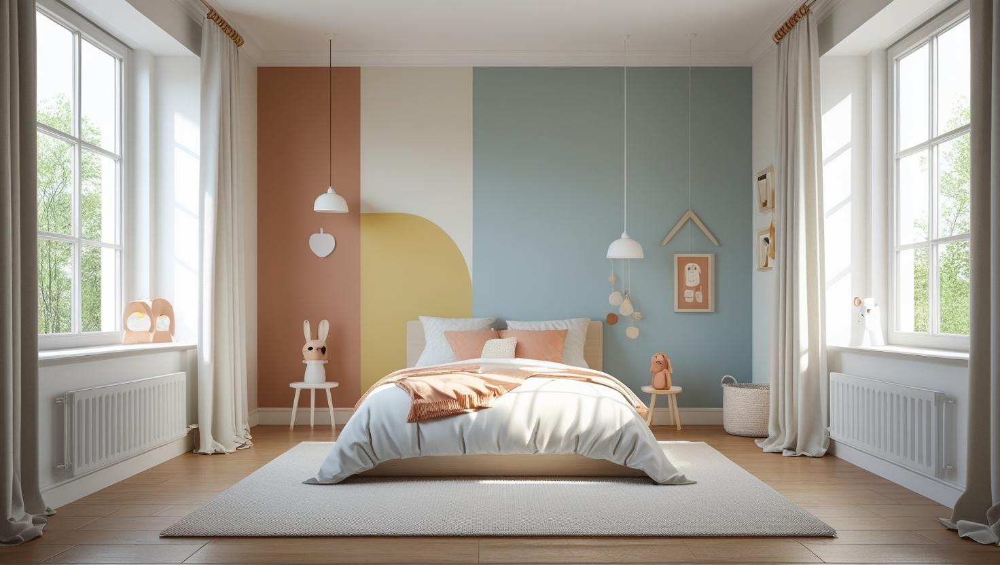
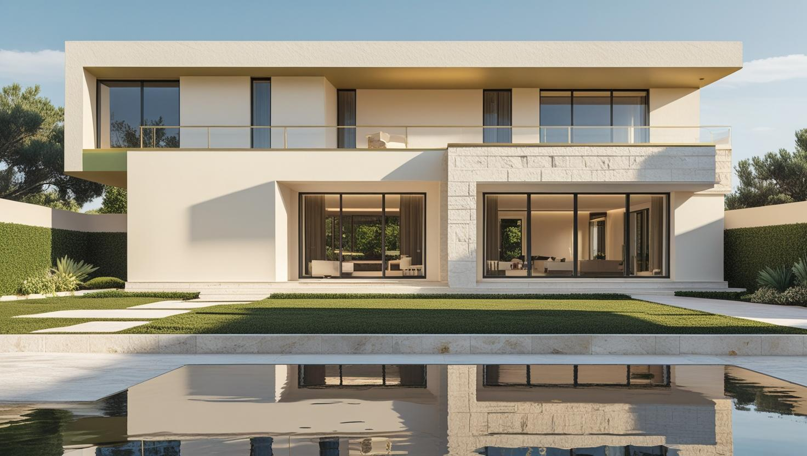
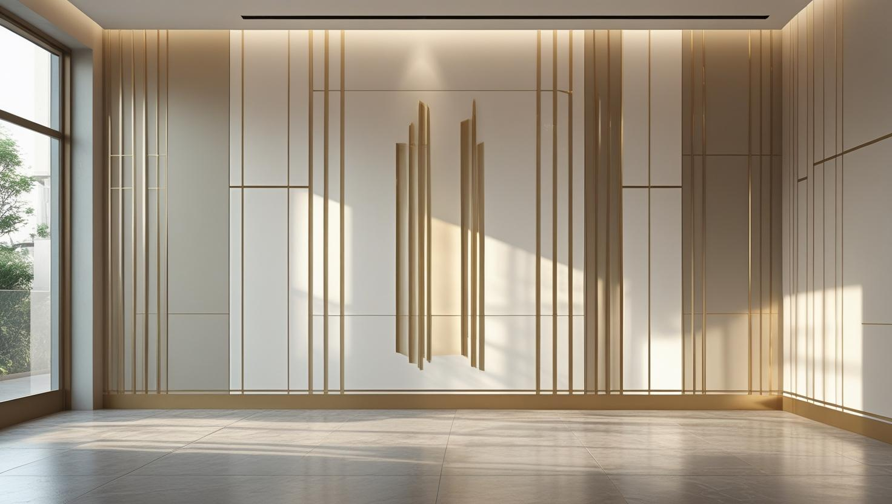

İstanbul Güngören Profesyonel Boya Ustası
20 yıllık tecrübemizle Güngören'de küçük daire, cadde dükkânı ve Merter tarafındaki iş yerleri için iç ve dış cephe boyası yapıyoruz. Haznedar'dan Tozkoparan'a eşyalı çalışma planını keşifte birlikte çıkarıyoruz.
Güngören'de Boya Badana: Küçük Daire ve Dükkân İşleri
Güngören boyacı talebinde iki iş tipi öne çıkıyor: yoğun apartman stoğundaki daireler ve cadde üzerindeki dükkânlar. İlçe İstanbul'un en yoğun yerleşimlerinden biri; bu, iş planında ulaşım ve malzeme taşımayı belirleyici hale getiriyor.
Dar sokaklarda araç yanaştırma ve asansörsüz üst katlara malzeme taşıma, işin gün sayısına doğrudan yansıyor. Keşifte adresi görüp bunu baştan hesaba katıyoruz.
Daire tarafında sık karşılaştığımız kalemler eski boyanın raspası ve tavan kenarı dökülmeleri. Dükkân tarafında ise Güngören boya ustası talebi genellikle kiracı değişimi ya da tabela yenileme dönemine denk geliyor.
Hizmetlerimiz

İç Mekan Boyama
Güngören'deki küçük dairelerde eşyayı evden çıkarmadan, odaları sırayla boşaltıp örterek çalışıyoruz. Merter tarafındaki ofis ve showroomlarda ise hangi bölümün önce boyanacağını iş yerinin düzenine göre belirliyoruz.
- Oda sırasıyla eşyalı boya planı
- Tavan kenarı dökülmelerinde onarım
- Showroom ve ofis duvarı boyama
- Lekeli duvarın tamamını yeniden boyama

Dış Cephe Boyama
Bitişik ya da birbirine çok yakın binalarda dış cephe işi sokak cephesiyle sınırlı kalmayabilir; komşu binadan yüksekte kalan kalkan duvarlar da yağış aldığı için kontrol edilir. Güngören'de erişim yöntemi ve gereken izinler keşifte konuşulur.
- Kalkan duvarda çatlak ve nem kontrolü
- Sokak cephesinde sıva onarımı
- Dükkân girişini gözeten iskele planı
- Hava durumuna göre uygulama takvimi

Dekoratif Boyama
Küçük dairelerde açık tonlar ve ipek mat yüzeyler ışığı dağıtarak odayı daha ferah gösterir; dekoratif doku isteniyorsa antre ya da televizyon duvarı gibi dar bir alan seçilebilir. Güngören'deki showroomlarda ise sade bir fon rengi ürünleri öne çıkarır.
- Açık ton ve ipek mat seçenekler
- Antrede dekoratif doku
- Showroom için sade fon rengi
- Kapı ve kartonpiyer yenileme
Fiyat Tablosu
| Hizmet Türü | Metrekare Fiyatı | Ortalama Süre (100m²) | Garanti |
|---|---|---|---|
| İç Cephe Boyama | 100-200 TL | 2-3 Gün | Uygulama kapsamına göre |
| Dış Cephe Boyama | 150-280 TL | 3-5 Gün | Uygulama kapsamına göre |
| Dekoratif Boyama | 250-500 TL | 4-7 Gün | Uygulama kapsamına göre |
| Ofis Boyama | 120-220 TL | 2-4 Gün | Uygulama kapsamına göre |
Metrekare fiyatları yaklaşık ön değerlendirme aralığıdır. Uygulanacak ölçüm yöntemi, boyanacak alanın kapsamı, yüzey durumu, tamirat ihtiyacı, kat sayısı ve malzeme seçimi keşif sırasında netleştirilir.
Dış cephe boya fiyatları uygulama alanı için yaklaşık 150–280 TL/m² aralığındadır. Kesin hesaplama yöntemi ve teklif; yüzey durumu, bina yüksekliği, erişim veya iskele ihtiyacı, tamirat kapsamı, boya sistemi ve uygulanacak kat sayısına göre keşif sırasında netleştirilir.
Uygulama kapsamına göre işçilik garantisi sağlanır. Garanti kapsamı ve istisnaları teklif veya iş sözleşmesinde belirtilir.
Bu rakamlar İstanbul Boyacılık'ın 2026 gösterge fiyat aralığıdır. Bir piyasa ortalaması değildir. Kesin fiyat; yüzey durumu, hazırlık ve tamirat miktarı, uygulanacak kat sayısı, seçilen malzeme sınıfı, ulaşım ve kat koşulları ile evin eşyalı mı boş mu olduğu keşifte görüldükten sonra belirlenir.
Güngören'de aralığı etkileyen iki kalem var: çıkan tamirat miktarı ve erişim. Dar sokak, park kısıtı ve asansörsüz üst kat, malzeme taşıma süresini uzatarak işi aralığın üst tarafına doğru itebiliyor.
Merter Tarafında Showroom ve Ofis Boyarken Çalışma Düzenini Korumak
Tekstil showroomu ya da ofis katı boyanacaksa ürünlerin, askıların ve numune raflarının nereye alınacağı işe başlamadan netleşmelidir; teşhir alanı ve çalışma bölümleri sırayla ele alınarak boyanır.
Merter, İstanbul'un büyük toptan tekstil merkezlerinden biridir. İş hanlarındaki mağaza ve showroomlarda kumaş topları, askılı teşhir ve koliler duvarlara yakın durabilir; bunların taşınması ya da örtülmesi planlanmadan başlanan iş kolayca aksar. Güngören boyacı olarak bu planı keşifte iş yeri sahibiyle birlikte yapıyoruz.
- Bölüm sırası: Teşhir alanı, depo köşesi ve ofis bölümü ayrı aşamalar olarak planlanır; bir bölüm kurumadan ürünler geri asılmaz.
- Ürün koruması: Taşınamayan raflar ve askılar örtüyle kapatılır, zemin ve vitrin kenarları bantla korunur.
- Vitrin tarafı: Dışarıdan görünen vitrin arkası duvar, dükkânın açık kalacağı saatlere göre ayrı bir aşamada boyanır.
- Işık: Spot aydınlatmalı duvarlarda parlak boya yansıma yapabileceği için mat ya da ipek mat yüzey tercih edilir.
Güngören'de Lokal Boya: Tek Duvar ya da Lekeli Bölüm Nasıl Yenilenir?
Bir su lekesi ya da mobilya sürtmesi için bütün evi boyatmanız gerekmeyebilir; ancak rötuşun belli olmaması için yalnız lekeli nokta değil, duvarın tamamı köşeden köşeye boyanır.
Küçük dairelerde üst kattan gelen bir sızıntı izi ya da taşınma sırasında oluşan çizikler çoğu zaman tek bir duvarı etkiler. Lokal boyada asıl zorluk renk ve parlaklık farkıdır: aynı renk kodu bile zamanla solmuş eski boyanın yanında farklı görünebilir, mat bir duvara saten boya sürüldüğünde ise fark ışık vurdukça belirginleşir.
Su lekesinde önce kaynağın durduğundan emin olmak gerekir. Leke kuruduktan sonra leke örtücü bir astar sürülmezse iz, yeni boyanın altından yeniden çıkabilir. Hangi yüzeyde hangi parlaklığın uygun olduğunu mat, saten ve parlak boya karşılaştırmamızda inceleyebilirsiniz.
Bitişik Binalarda Kalkan Duvar ve İç Duvara Vuran Nem
Binaların bitişik ya da çok yakın yapıldığı yoğun dokuda, komşu binanın üstünde açıkta kalan kalkan duvar yağış aldığında içerideki odada nem lekesi olarak görülebilir; bu leke yalnız iç boyayla çözülmez.
Kalkan duvar, binanın komşu parsele bakan penceresiz yan duvarıdır. Komşu bina daha alçaksa ya da yıkılıp yeniden yapılıyorsa bu duvar açıkta kalır ve sıvası sokak cephesi kadar bakım görmemiş olabilir. Güngören gibi sık yapılaşmış ilçelerde dış duvara bakan odalardaki kabarma ve küf lekelerinde bu ihtimal göz önünde bulundurulmalıdır.
Keşifte lekenin yalnız kalkan duvara bakan odada mı olduğuna, yağışlı dönemlerden sonra büyüyüp büyümediğine ve duvarın dış yüzünde çatlak görünüp görünmediğine bakıyoruz. Kaynak dış yüzeydeyse onarım ve dış cephe boyası kat malikleri kararıyla yapılır; iskele komşu parsele ya da kaldırıma taşacaksa gerekli izinler de takvime girer. Bu değerlendirme, Güngören boya badana işinin iç mekânla sınırlı kalıp kalmayacağını belirler.
Nem kaynaklı kabarmaların nedenlerini boyanın neden kabarcık yaptığını anlatan yazımızda ayrıntılı bulabilirsiniz.
Güngören’de Hizmet Verdiğimiz Mahalleler
Merter tarafındaki iş yerlerinden Güneştepe, Haznedar ve Tozkoparan'daki dairelere kadar Güngören boya ustası olarak aşağıdaki mahallelerde keşif ve uygulama yapıyoruz:
Güngören Mahalleleri
- Güngören Abdurrahman Nafiz Gürman Mahallesi
- Güngören Akıncılar Mahallesi
- Güngören Gençosman Mahallesi
- Güngören Güneştepe Mahallesi
- Güngören Güven Mahallesi
- Güngören Haznedar Mahallesi
- Güngören Mareşal Çakmak Mahallesi
- Güngören Mehmet Nesih Özmen Mahallesi
- Güngören Merkez Mahallesi
- Güngören Sanayi Mahallesi
- Güngören Tozkoparan Mahallesi
Güngören Boyacılık Müşteri Yorumları
"Güngören iç cephe boyama için İstanbul Boyacılık ekibine ulaştık. Çok titiz ve hızlı çalıştılar. Emeğinize sağlık."
Arda Gürel
Merkez Mahallesi / Güngören
"Güngören boyacı ustası arayanlara kesinlikle tavsiye ederim. Dış cephe boyama işi tertemiz oldu."
Nilay Taşkın
Haznedar / Güngören
"Ofis boyama hizmeti için anlaştık. Planlı, temiz ve profesyonel bir çalışma oldu."
Samiye Aydın
Tozkoparan / Güngören
Faydalı Bağlantılar
Güngören boya badana planında fiyat hesabı, boya markası ve yakın ilçe seçeneklerini birlikte değerlendirmek için aşağıdaki rehberler kullanılabilir.
Güngören Boyacı Hizmeti: Sık Sorulan Sorular
Tabela değiştikten sonra dükkân cephesinde kalan izler boyayla kapanır mı?
Kapanır; ancak yalnız izlerin üstünü boyamak çoğu zaman yetmez. Tabelanın arkasında kalan yüzey güneş görmediği için çevresinden farklı tonda kalır; dübel ve vida delikleri de dolgu yapılmadan boyanırsa belli olur. Delikler doldurulup zımparalandıktan sonra cephenin o bölümü kenardan kenara boyanır. Boyanacak yüzey binanın dış cephesine aitse bina yönetiminin görüşünü önceden almak gerekebilir.
Merter'deki showroomumuz için hangi duvar rengini önerirsiniz?
Ürünlerin rengini doğru göstermek için teşhir duvarlarında açık ve nötr tonlar genellikle güvenli bir seçimdir. Marka rengini kullanmak isterseniz kasa arkası ya da giriş duvarı gibi tek bir yüzeyle sınırlamak, rengin ürünlerin önüne geçmesini engeller. Son kararı showroomun kendi ışığında duvara sürülen küçük bir deneme alanına bakarak vermenizi öneriyoruz.
Güngören'de boya badana keşfi için evde bulunmam gerekiyor mu?
Keşifte yüzeyi birlikte görmek ve hangi odaların, tavanların ya da kapıların işe dahil olduğunu konuşmak için sizin ya da yetki verdiğiniz birinin adreste olması gerekir. Önceden WhatsApp'tan birkaç fotoğraf göndermeniz keşifte neye bakılacağını netleştirir; kesin kapsam ve yazılı teklif yerinde bakıldıktan sonra hazırlanır.
Asansörsüz binada boya işi daha mı pahalı oluyor?
Duvarın kendisi değişmiyor ama malzeme taşıma ve toplama süresi uzuyor, bu da işin gün sayısına yansıyor. Keşifte kat ve erişim durumunu görüp teklife baştan yansıtıyoruz; sonradan ek kalem çıkarmıyoruz.
Dükkânım küçük, tek günde biter mi?
Küçük hacimli ve yüzeyi sağlam bir dükkânda, işin kapsamı ve o gün ekip müsaitliği uygunsa bir günde teslim mümkün olabiliyor. Bu bir kural değil, koşullara bağlı bir imkân; raspa ve tamirat çıkarsa süre uzar.
Boya işi sırasında koku ne kadar sürede geçer?
Su bazlı iç cephe boyalarında koku genellikle havalandırmayla kısa sürede belirgin biçimde azalıyor. Kapalı ve havalandırması zayıf mekânlarda süre uzayabiliyor. İş sonrası havalandırma önerimizi teslimde birlikte konuşuyoruz.
İletişim
İletişim Bilgileri
Telefon: 0507 832 29 12
E-posta: boyaustamistanbul@gmail.com
10+ Uzman Ustamızla Güngören ve çevresine hizmet veriyoruz.
Çalışma Saatleri: Pzt-Cmt 00:00-23:59